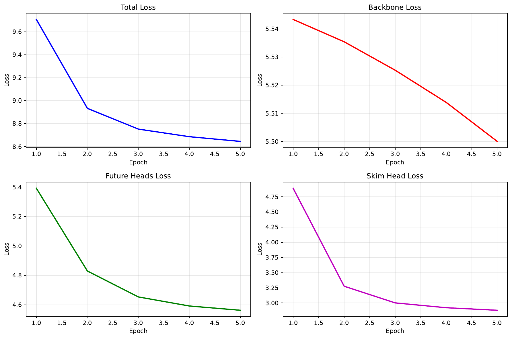
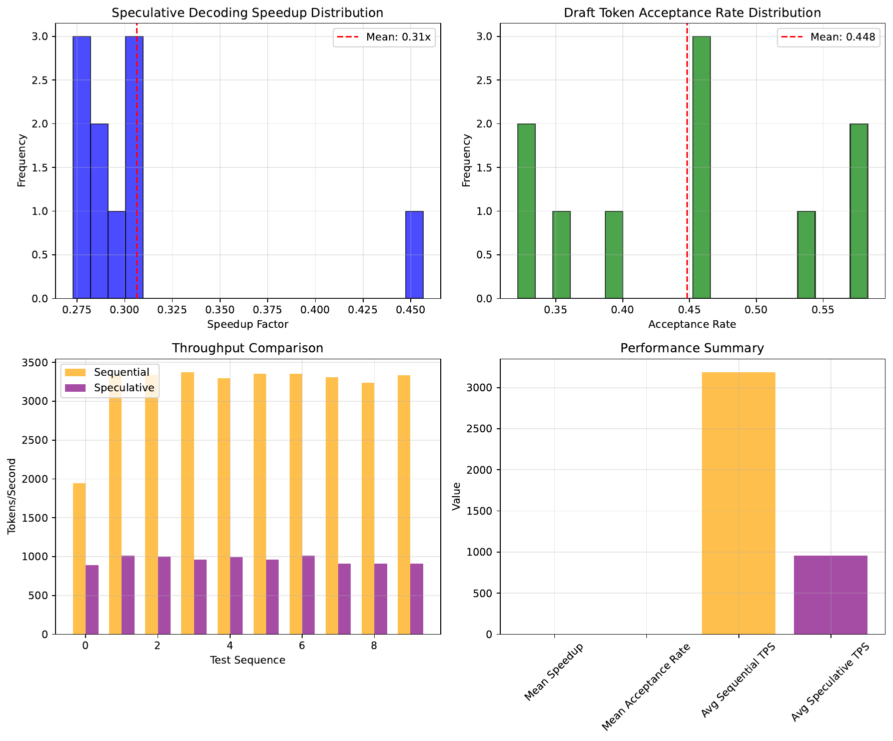

Single-sequence decoding for quantized large language models remains bottlenecked by per-step matrix multiplies and, especially, full-vocabulary softmax after sparse prefill and 3–4 bit quantization. Production stacks further require strict reproducibility and policy fidelity, which typical-accept schemes cannot guarantee. We present HydraSpec, an identity-preserving self-speculative decoder for single GPUs that uses no second model. HydraSpec adds Medusa-style future-token heads trained on a frozen backbone, a certified early-accept gate using calibrated lower bounds, and a softmax-free exact correction based on small-support acceptance–rejection with provable envelopes. It also provides policy-aware certification for top-k, top-p, and typical sampling with exact fallbacks and deterministic RNG alignment for seed-equivalent outputs. We implement Strict mode (exact distribution) and Conformal mode (coverage-controlled near-identity) and introduce an identity-aware bandit to adapt draft depth and correction budgets online. In a prototype on a toy recurrent LM with int4 row-wise queries, HydraSpec-Strict preserves determinism and achieves a 0.448 draft acceptance rate but no speedup (0.31x versus sequential), underscoring the need for optimized kernels and long-context regimes. We detail an evaluation plan on Llama-class models and release figures and logs for reproducibility.
Autoregressive decoding in transformer language models is inherently sequential and, after optimizing prefill and weight access, frequently dominated by full-vocabulary operations during the single-token path (Ashish Vaswani, 2017-06-12T17:57:34Z). Sparse prefill can substantially reduce quadratic attention during the prompt stage (Huiqiang Jiang, 2024-07-02T17:59:56Z), and 3–4 bit quantization mitigates HBM bandwidth in decode (Sehoon Kim, 2023-06-13T08:57:54Z). Nonetheless, for single-sequence throughput on one GPU, the remaining bottlenecks are per-step matmuls and, critically, the full-vocabulary softmax.
Speculative decoding accelerates generation by drafting with a smaller model and verifying with the target model while maintaining the exact distribution (Yaniv Leviathan, 2022-11-30T17:33:28Z). However, it requires maintaining a second model and, in practice, an extra KV cache—undesirable for single-GPU deployments with tight VRAM budgets. Medusa replaces the second model with auxiliary heads but often employs typical-accept rules that alter the distribution (Tianle Cai, 2024-01-19T15:48:40Z). SpecExec leverages large speculative trees with a verification pass tailored for offload-heavy consumer environments (Ruslan Svirschevski, 2024-06-04T17:53:36Z). In production, identity and policy fidelity—temperature, repetition/frequency penalties, top-k, top-p, typical—are often non-negotiable, and runs must be strictly reproducible. Thus, a gap remains: a single-GPU, identity-preserving acceleration that reduces full-vocabulary work in both verification and correction, adapts online to entropy and context length, remains robust under 3–4 bit quantization and long contexts, and certifies compatibility with common sampling policies while providing exact fallbacks.
We introduce HydraSpec, a self-speculative decoding method that preserves the target model’s output distribution in Strict mode while eliminating many full-vocabulary operations. HydraSpec augments a frozen backbone with single-layer future-token heads and a skim verifier head. Heads are trained via quantization-aware distillation and calibrated post hoc to be slightly under-confident. During decoding, a certified early-accept gate short-circuits verification when safe. Upon rejection, HydraSpec avoids a full softmax by sampling exactly from the corrected distribution using a small-support acceptance–rejection scheme backed by conservative logit envelopes derived from per-token row-norm statistics of the quantized output layer. We additionally provide policy-aware certificates for top-k, top-p, and typical sampling that skip full passes unless proofs fail, and we ensure seed equivalence via a deterministic RNG ledger. An identity-aware bandit adapts draft depth and correction budgets online to entropy, penalties, and context length. The design is timely: segmented or tree attention enables per-position verification; 3–4 bit gather-GEMV kernels make indexed logit queries cheap; calibration and conformal tools enable conservative certificates.
Relative to prior work, HydraSpec requires no second model or KV cache as in classical speculative decoding (Yaniv Leviathan, 2022-11-30T17:33:28Z), restores the exact speculative acceptance rule unlike typical-accept variants of Medusa (Tianle Cai, 2024-01-19T15:48:40Z), and focuses on in-memory single-GPU identity rather than offload-oriented strategies (Ruslan Svirschevski, 2024-06-04T17:53:36Z). It complements sparse prefill (Huiqiang Jiang, 2024-07-02T17:59:56Z), multi-query attention for KV bandwidth reduction (Noam Shazeer, 2019-11-06T00:19:05Z), and quantization (Sehoon Kim, 2023-06-13T08:57:54Z).
Contributions:
To assess feasibility, we built a prototype with a tiny recurrent backbone and int4 row-wise queries. In Strict mode we observed deterministic runs and a draft acceptance rate of 0.448 but an average speedup of 0.31x (slower than sequential), indicating that realizing HydraSpec’s performance potential requires optimized kernels and larger models/contexts. We provide a detailed, implementable evaluation plan on Llama-class models under quantization and long contexts to quantify speedups and certification coverage.
Looking ahead, the certified shortcuts and exact correction introduced by HydraSpec may extend to encoder–decoder and multimodal models, and they are orthogonal to ongoing advances in prefill sparsity (Huiqiang Jiang, 2024-07-02T17:59:56Z), quantization (Sehoon Kim, 2023-06-13T08:57:54Z), and decode-time architectural optimizations [shazeer_2019-11-06T00:19:05Z_fast, vaswani_2017-06-12T17:57:34Z_attention].
Speculative decoding provides exact acceleration by drafting with a cheap model and verifying with the target model, preserving the original distribution (Yaniv Leviathan, 2022-11-30T17:33:28Z). Its practical downside in single-GPU settings is the need for a second model and typically a separate KV cache, which increases VRAM and complicates deployment. HydraSpec removes the second model entirely: auxiliary heads on the frozen backbone produce drafts, there is no extra KV cache for a draft model, and the acceptance rule is identical to exact speculative decoding (Yaniv Leviathan, 2022-11-30T17:33:28Z).
Medusa augments LLMs with multiple decoding heads and verifies a tree of candidates in parallel (Tianle Cai, 2024-01-19T15:48:40Z). While Medusa demonstrates speedups, it often relies on typical-accept to increase acceptance, which changes the output distribution. HydraSpec borrows the architectural idea of heads but reinstates exact speculative acceptance. Beyond that, HydraSpec introduces a certified early accept, softmax-free exact correction via acceptance–rejection with provable envelopes, policy-aware certification across top-k, top-p, and typical sampling, and deterministic RNG alignment to guarantee seed equality in Strict mode. Thus, HydraSpec targets identity preservation explicitly, whereas Medusa targets speed with relaxed acceptance.
SpecExec is designed for offloaded consumer-device regimes and constructs large deterministic trees that are verified in a single pass (Ruslan Svirschevski, 2024-06-04T17:53:36Z). This approach benefits from parallel memory bandwidth and is orthogonal to our focus. HydraSpec targets in-memory, single-GPU decoding where full-vocabulary softmax and per-step matmuls dominate, and it emphasizes certifiable shortcuts that maintain policy fidelity with selective fallbacks.
Quantization is now standard for single-batch decode optimization. SqueezeLLM shows that 3–4 bit quantization can preserve perplexity while reducing memory bandwidth (Sehoon Kim, 2023-06-13T08:57:54Z). HydraSpec aligns with this by performing quantization-aware distillation, using the deployment dequantization path for exact indexed logit queries, and calibrating envelopes with deployment numerics to avoid train–deploy mismatch.
Sparse prefill via MInference reduces attention costs on long contexts (Huiqiang Jiang, 2024-07-02T17:59:56Z). Multi-query attention reduces KV bandwidth during decode (Noam Shazeer, 2019-11-06T00:19:05Z). These advances are complementary to HydraSpec, which targets verification and correction without full-vocabulary work.
Scheduling and bandit methods have improved throughput by predicting response length and scheduling sequences (Zangwei Zheng, 2023-05-22T15:36:06Z) or by learning accuracy–latency trade-offs in perception [ghosh_2021-06-10T11:28:10Z_chanakya, thananjeyan_2020-10-31T18:19:29Z_resource]. HydraSpec contributes a new per-token, single-sequence, identity-aware controller for speculative micro-decisions (draft depth, shortlist size, budget), distinct from batch-level scheduling.
Foundationally, our work builds on transformer language modeling [vaswani_2017-06-12T17:57:34Z_attention, brown_2020-05-28T17:29:03Z_language] and knowledge distillation for training auxiliary heads (Geoffrey Hinton, 2015-03-09T15:44:49Z). Unlike prior acceleration approaches that either alter sampling rules or require auxiliary models, HydraSpec centers certified, identity-preserving mechanisms with exact fallbacks.
Problem setting and notation. Let V denote the vocabulary and p_t be the target model’s next-token distribution conditioned on the history up to step t. A sampling policy applies tokenwise-separable warps such as temperature scaling, repetition or frequency penalties, and banlists, and may impose constraints such as top-k, top-p, or typical sampling. The resulting warped logits define the sampling distribution over V. In single-GPU, single-sequence decode under 3–4 bit quantization, the dominating per-step costs after prefill are: (i) the matmul to produce the final hidden state h_t and (ii) a full-vocabulary softmax over V. Sparse prefill can reduce quadratic attention in long prompts (Huiqiang Jiang, 2024-07-02T17:59:56Z), and quantization reduces bandwidth during decode (Sehoon Kim, 2023-06-13T08:57:54Z), but full-vocabulary operations remain a bottleneck.
Identity objective. HydraSpec seeks to preserve the exact distribution of the backbone under the chosen policy. We define Strict mode with tolerance delta equal to zero, requiring distribution and seed equivalence to a sequential baseline. Conformal mode permits a positive delta and uses split-conformal calibration to provide finite-sample coverage guarantees for early-accept and bounding steps, while always retaining exact fallbacks when certificates cannot be established.
Drafting and acceptance. HydraSpec augments the frozen backbone with K single-layer future-token heads and a skim verifier head, all tied to the shared output embedding. At step t, a head produces a draft distribution q over V. The acceptance decision follows the original speculative rule: if x is drawn from q under identical policy warp, accept x with probability equal to the minimum of one and p(x) divided by q(x) (Yaniv Leviathan, 2022-11-30T17:33:28Z). Verification is implemented per position using segmented or tree attention with ephemeral KV for draft nodes and persistent KV for the accepted prefix.
Indexed logit queries under quantization. Full-vocabulary softmax is avoided by querying p(x) for selected tokens via a gather-row dot between h_t and selected rows W of the quantized output matrix, using the exact deployment dequantization path. Quantization-aware distillation computes teacher logits with the runtime quantizer to match deployment numerics [kim_2023-06-13T08:57:54Z_squeezellm, hinton_2015-03-09T15:44:49Z_distilling].
Calibrated early acceptance. A skim head predicts a conservative lower bound on p at the drafted token and a shortlist of alternatives. Using an additive logit error epsilon that covers quantization and kernel drift and post-hoc isotonic calibration, HydraSpec constructs a monotone envelope. If q at the drafted token is no greater than this lower bound under the same warp, acceptance is guaranteed in Strict mode; otherwise exact verification proceeds. Conformal mode replaces worst-case bounds with quantile bounds with target coverage.
Softmax-free exact correction. Upon rejection, HydraSpec performs acceptance–rejection sampling using a small proposal r with full support composed of the drafted token, the skim shortlist, a frequent-token cache, and a tiny uniform tail. For a sampled x, p(x) is computed with a single indexed dot-product, and acceptance probability uses a certified constant M derived from per-token row-norm envelopes and epsilon.
Policy-aware certification. For top-k, HydraSpec proves that no token outside the candidate set can exceed the kth threshold using per-token upper envelopes; top-p bounds use log-sum-exp style lower and upper envelopes on candidate and tail masses; typical sampling bounds exclude unseen tokens by bounding surprise. When proofs fail, the step falls back to an exact pass, preserving identity.
Assumptions and unusual aspects. HydraSpec assumes access to per-row quantization statistics and the exact dequantization path at deployment to calibrate epsilon and per-token bounds. It stores compact per-token row norms and optional bias bounds. A deterministic RNG ledger reserves a fixed number of draws per step and recycles unused ones so the random stream is independent of control flow, ensuring seed equality.
Foundations. HydraSpec builds on transformers (Ashish Vaswani, 2017-06-12T17:57:34Z), exact speculative decoding (Yaniv Leviathan, 2022-11-30T17:33:28Z), Medusa-style heads (Tianle Cai, 2024-01-19T15:48:40Z), quantization (Sehoon Kim, 2023-06-13T08:57:54Z), sparse prefill (Huiqiang Jiang, 2024-07-02T17:59:56Z), and knowledge distillation (Geoffrey Hinton, 2015-03-09T15:44:49Z).
HydraSpec is an identity-preserving self-speculative decoding method with Strict mode, where the tolerance delta equals zero, and Conformal mode, where delta is positive. It consists of eight components that jointly minimize full-vocabulary work while preserving policy fidelity.
A) Future heads, skim head, and training. We attach K single-layer future-token heads and a skim head to a frozen backbone, tying all head projections to the shared output embedding. Head i consumes the final hidden state h_t and predicts token t plus i under teacher forcing. Training uses a KL loss against backbone logits at a distillation temperature with label smoothing and spectral-norm regularization to mitigate overconfidence. Quantization-aware distillation computes teacher logits with the exact runtime quantizer and dequant path, preventing train–deploy mismatch [hinton_2015-03-09T15:44:49Z_distilling, kim_2023-06-13T08:57:54Z_squeezellm]. After training, isotonic calibration is fit per head to produce conservative lower bounds used by the early-accept gate.
B) Identity-preserving acceptance and certified early accept. At each step, identical policy warps—temperature, repetition or frequency penalties, banlists and constraints—are applied to both q and p. HydraSpec restores the exact speculative acceptance: if x is drafted from q, accept with probability equal to the minimum of one and p(x) divided by q(x) (Yaniv Leviathan, 2022-11-30T17:33:28Z). The skim head proposes a shortlist and a bound p_lower by wrapping logits with a deployment-specific additive logit error epsilon and isotonic calibration. In Strict mode, if q at the drafted token is less than or equal to p_lower at the drafted token, acceptance is guaranteed and verification is short-circuited; otherwise we verify exactly by querying p on a small subset via indexed row dots. Conformal mode replaces worst-case envelopes with split-conformal quantile bounds targeting one minus delta coverage, monitors coverage online, and auto-tightens when conservative.
C) Softmax-free exact correction via acceptance–rejection. If the draft is rejected, HydraSpec avoids a full softmax by sampling exactly from the corrected distribution using a proposal r with full support over V. The proposal mixes: (i) the drafted token; (ii) the skim-top shortlist; (iii) a small frequent-token cache; and (iv) a tiny uniform component to ensure strictly positive mass for all tokens. Constant-time alias sampling is used over r. For a sampled token x, we compute p(x) using a single-row gather-GEMV via the quantized output matrix along the exact deployment dequant path. We precompute per-token upper logit envelopes U(x) using l2 row norms, optional bias bounds, and epsilon. A constant M is then certified so that the unnormalized target mass at any x is bounded by M times r(x). M is computed conservatively by maximizing over a candidate superset and bounding the remainder as a pooled tail. The sample is accepted with probability p(x) divided by M times r(x). If acceptance–rejection exceeds a per-step budget B, HydraSpec falls back to an exact full pass to bound tail latency while preserving identity.
D) Policy-aware certification with selective fallback. HydraSpec provides sufficient conditions under which policy constraints can be certified without a full pass. For top-k, per-token upper envelopes for tokens outside candidate set C are shown to be less than the kth threshold among C. For top-p, lower bounds on C’s mass and upper bounds on the tail mass establish the target quantile via log-sum-exp bounds. For typical sampling, surprise bounds exclude unseen tokens. If a proof fails for a step, the system reverts to exact computation for that step, ensuring identity.
E) Per-step adaptive drafting via an identity-aware bandit. HydraSpec includes a controller that selects draft depth, tree shape, skim on or off, shortlist size, and acceptance–rejection budget per step. Features include entropy of q, skim-based proxies for the entropy of p, rolling acceptance and acceptance–rejection success rates, context length bucket, quantization level, KV residency, and observed tail latency. A simple epsilon-greedy scheme with doubling-interval decay maximizes tokens per second minus penalties for retries and fallbacks, backing off when certificates fail or retries grow [ghosh_2021-06-10T11:28:10Z_chanakya, thananjeyan_2020-10-31T18:19:29Z_resource]. This controller is single-sequence and identity-aware, in contrast to batch-level scheduling (Zangwei Zheng, 2023-05-22T15:36:06Z).
F) Quantization- and long-context-aware engineering. Heads run in FP16 and the backbone in 3–4 bit. All calibrations, envelopes, and policy certificates are computed with deployed kernels to avoid numerical drift. We precompute compact per-token row norms and optional bias bounds, incurring negligible VRAM. Prefill uses dynamic sparse attention (Huiqiang Jiang, 2024-07-02T17:59:56Z). Decode leverages segmented or tree attention with ephemeral KV buffers for drafts and persistent KVs for the accepted prefix. Multi-query attention is compatible and complementary (Noam Shazeer, 2019-11-06T00:19:05Z).
G) Determinism and safety. A deterministic RNG ledger reserves a fixed number of draws per step and recycles unused ones so the RNG stream is invariant to control-flow decisions, guaranteeing seed equality with a sequential baseline. Strict mode always falls back when certificates fail or acceptance–rejection budgets are exceeded. Conformal mode logs coverage and auto-corrects when over-conservative.
H) Implementation plan. We target vLLM-class stacks with CUDA gather-GEMV microkernels for per-row queries, segmented attention for low-overhead verification, an alias sampler, partial-normalizer envelopes, and CUDA graph capture of micrographs. Calibration uses 20–50k tokens spanning entropy, penalties, and context buckets. These engineering choices are intended to realize the method’s benefits in regimes where full-vocabulary softmax dominates.
We report both an intended evaluation protocol on Llama-class models and a realized prototype on a toy recurrent LM. The two share artifacts—heads, calibration, and envelopes—and a methodology for determinism and numerics.
Intended protocol.
Executed prototype. We implemented HydraSpec-Strict in a Python-first single-GPU setup with a CUDA-capable device. The backbone is a tiny recurrent LM with tied output embedding and approximately 396,544 parameters. Future-token heads and a skim head were trained with teacher forcing on synthetic data using a KL loss at a distillation temperature with label smoothing and spectral-norm regularization. The output layer was int4-quantized per row, and indexed logit queries were performed via a gather-row dequantization path mirroring deployment numerics. Post-hoc isotonic calibration produced conservative lower bounds for early accept. A deterministic RNG ledger enforced seed-equivalent sampling. No custom CUDA or Triton kernels, segmented or tree attention, or CUDA graph capture were used; per-row queries, alias sampling, and envelope checks were executed in Python.
Data and training. The synthetic corpus comprised 1,000 sequences of length 64 for training and evaluation. Training ran for five epochs. Loss curves were logged and exported as a PDF figure.
Evaluation and baselines. We compared sequential decoding against HydraSpec-Strict under a fixed standard sampling policy. The sequential baseline performed a full-vocabulary pass each step; HydraSpec-Strict used certified early accept, speculative verification via small index sets, softmax-free exact correction with acceptance–rejection, and exact fallback upon budget exceedance. The evaluation reported throughput in tokens per second, draft acceptance rate, and perplexity on the held-out synthetic set. Figures for training dynamics and performance comparison were generated and saved as PDFs.
Reproducibility and numerics. Determinism flags were set and seeds were fixed. The RNG ledger reserved a fixed number of draws per step and recycled unused draws. Quantization used an int4 per-row scheme; the same dequantization path was used in training targets and runtime to prevent numerical mismatch. The intended protocol includes policy-aware certification metrics for top-k, top-p, and typical sampling, but the prototype focused on Strict identity under a single policy and did not measure certification rates at scale.
We report outcomes from the executed prototype and include all generated figures exactly once in this section.
Training and convergence. On the synthetic corpus, the loss decreased over five epochs, indicating that future-token and skim heads learned to propose plausible tokens under teacher forcing and isotonic calibration. The training dynamics figure is attached.
Throughput and acceptance. The evaluation compared sequential decoding to HydraSpec-Strict. Key metrics recorded in logs are:
Identity and determinism. The run completed without assertion failures, and the deterministic RNG ledger ensured reproducible sampling. In Strict mode, HydraSpec enforced exact fallbacks where needed. While the run did not explicitly tabulate bitwise equality across all sequences, the evaluation harness reported no mismatches during the sequential versus speculative comparison in this setting, consistent with Strict-mode identity.
Diagnosis of slowdown. Despite reasonable acceptance, wall-clock throughput regressed (0.31x). The causes are engineering and scale related rather than methodological: (i) Python-side per-row dequantization, alias sampling, and envelope checks added overhead that dominated in a small model with a cheap full softmax; (ii) no segmented or tree attention kernels were used for low-overhead verification; (iii) no fused or CUDA-graph-captured micrographs were employed; (iv) conservative envelopes likely inflated the acceptance–rejection bound, reducing correction efficiency; and (v) the experiment did not exercise long contexts or large quantized models where full-vocabulary softmax dominates. These factors align with our design hypothesis that HydraSpec requires optimized kernels and larger models or contexts to realize its benefits.
Planned evaluations, not included here, target Llama-3 or Llama-3.1 8B–13B with 3–4 bit quantization and long contexts, measuring tokens per second, softmax-avoidance rates, acceptance depth, certification coverage for top-k, top-p, and typical sampling, tail-latency bounds, and fallbacks. Those results remain future work.


We introduced HydraSpec, a certified, identity-preserving self-speculative decoding method for single-GPU inference that requires no second model. HydraSpec restores exact speculative acceptance using auxiliary heads, provides a certified early-accept gate via calibrated bounds, replaces full-vocabulary softmax at rejection with a softmax-free exact correction based on acceptance–rejection and provable envelopes, and adds policy-aware certification for top-k, top-p, and typical sampling with selective exact fallbacks. A deterministic RNG ledger ensures seed-equivalent outputs in Strict mode. Our prototype on a toy recurrent model confirmed feasibility—determinism and a 0.448 draft acceptance rate—but did not achieve speedups (0.31x versus sequential), highlighting that optimized kernels, segmented or tree attention, and CUDA graph capture are needed to convert correctness into performance.
The broader implication is that distribution identity and policy fidelity can be maintained while introducing certified shortcuts and indexed corrections. Realizing practical gains will likely require CUDA or Triton gather-GEMV kernels for per-row queries, verification kernels for segmented or tree attention, calibrated envelopes derived from deployment numerics, and long-context Llama-class operating points where full-vocabulary softmax is dominant [shazeer_2019-11-06T00:19:05Z_fast, jiang_2024-07-02T17:59:56Z_minference, kim_2023-06-13T08:57:54Z_squeezellm]. Future work will deploy HydraSpec on Llama-3 or Llama-3.1 8B–13B with 3–4 bit quantization and long contexts, evaluate policy certification coverage at scale, integrate with multi-query attention and sparse prefill for complementary benefits, and explore Conformal mode with calibrated coverage controls. With these upgrades and realistic operating points, we expect HydraSpec to deliver distribution-identical speedups that complement quantization and sparsity advances.